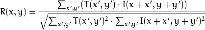

Problem Definition
For this project, we need to design and implement algorithms that recognize hand shapes for both hands and create a graphical display that responds to the recognition of the hand shapes or gestures. We will use template matching to do the recognition part. We assume that as long as the hands shown in the video are similar to the templates in size and shape, it should have a quite high accuracy in tracking the hands and recognizing the gestures. The noise in the background might affect the process, so a reliable threshold is important.
By this project, we will learn about tracking by template matching, analyzing properties of objects in an image, and consequently create interesting and interactive graphical applications.
Method and Implementation
1. Make templates Firstly, we took pictures of the hands in different gestures and then cut them out. Secondly, we set a threshold according to the skin color and binarize the hand templates. Then we resize the templates according to an object of reference, which, in this case, is the size of the frame. Lastly, we just flip the templates to match right hand and left hand, respectively.
2. Template matching We mainly use the template matching built-in function in opencv, which has four parameters: real-time frames, templates, result and a match method. We chose method=CV_TM_CCORR_NORMED:

Then we need to localize the best match by minMaxLoc. We took result from template matching as source array and saved the minimum and maximum values in result in minVal and maxVal; and saved points to the min and max locations in minLoc and maxLoc. But for our method, we mainly need maxLoc and we can know the exact location of the hands. We draw to rectangles around the hands we detect. Red for left hand and blue for right hand, considering the mirror effect by the webcam. Then we compare max matching values of 4 templates for each hand and the template with the max value will be our matched template. We use puttext to add labels to show which hand gesture we detect. In our system, 0 is the OK gesture; 1 is the palm; 2 is the thumb up and 3 is the victory hand.
Functions:
Differenciate current frame and previous -- myFrameDifferencing(Mat& prev, Mat& curr, Mat& dst)
Accumulate frame differences for a certain number of frames -- myMotionEnergy(vector
Threshold -- threshold(template, destination, 20, 255, ThRESH_BINARY)
Detect if a pixel is skin -- mySkinDetect(Mat& src, Mat& dst)
Resize -- cv::resize(template, template, cv::Size(frame0.cols * 0.38, frame0.rows * 0.5))
Flip -- cv::flip(template, destination, 1)
Create the result matrix that stores the matching results for each template location -- result.create(result_rows, result_cols, CV_32FC1)
Template matching -- matchTemplate(img, template, result, match_method), which is CV_TM_CCOEFF_NORMED in our case
Localize the minimum and maximum values in the result matrix -- minMaxLoc( result, &minVal, &maxVal, &minLoc, &maxLoc, Mat())
Draw rectangle -- rectangle(frame, matchLoc, Point(matchLoc.x + templ.cols, matchLoc.y + templ.rows), Scalar(255, 0, 0), 2, 8, 0)
Compare -- myMax(int a, int b, int c)
Label -- cvPutText(&tmp, buffer, cvPoint(2, 2), &font, cvScalar(255))
Experiments
Evaluation matrix: accurate detection of hands and accurate recognition of gestures
We tried four templates for both hands in good conditions and the results are generally successful. However, through our experiments, we found that in certain conditions the algorithm will have a chance of failure.
1. If the background is not in uniform light, there will be noises in the background. It will cause difficulty in detection. When the background is dark, it will be much more accurate.
2. If another object that is also in skin color shows in the video, say, our faces, the algorithm will somehow also consider it as a potential hand and draw a rectangle around it.
3. If the hands are not shown in a perfect position, which means not completely shown in the correct size and rotation, the detection will also be affected.
4. If there are too much hands, including part of the arms shown, it will also have a chance of failure. Since we only cut out the hand itself as the template, if we show part of the arms in the video, the algorithm will get confused by the shape it detected.
In general, the algorithms work pretty well. Given the condition that the background is dark and light source is unitary so that there will be less noises in the background; and given the condition that the hands are well shown in the video, the total accuracy rate is satisfying.
Accuracy rate:
For gesture 0, the ok hand: 8/15
For gesture 1, the palm: 13/15
For gesture 2, the thumb up: 12/15
For gesture 3, the victory hand:10/15
Results
Discussion
Strengths: the accuracy rate is quite high for the given templates in good conditions; and the running time is relatively short because we match 4 templates for each hand instead of 8 for each.
Limitations: Just as I have described in the experiments part, if the background is not in uniform light, or there is another skin color object in the video, or the hands are not shown exactly the same as the templates, there will be a chance of failure. Template matching in general requires good conditions to work well. At least the size, which means the position of the hands and the rotation, which means the directon the hands point to, are strictly required.
Potential future works: If we still decide to use template matching, we can construct a pyramid of templates in different sizes, so that we can change the size of the object in the frame and still have them matched. But there are many other ways that can do the recognition better than template matching. We can try the method of detecting the joints of body as nodes and see how the body parts which work as edges move to recognize gestures and movements. By machine learning general movements of human body, this method should have less limitation and broader applicaions.
Conclusions
In conclusion, our algorithms work well in detecting two hand objects at the same time and recognizing four different gestures from our templates in good conditions, which mainly includes a uniform background with less noises and well shown hands with ideal positions, rotations and shapes.
Credits and Bibliography
Joint work and discussions with Ziang Leng.